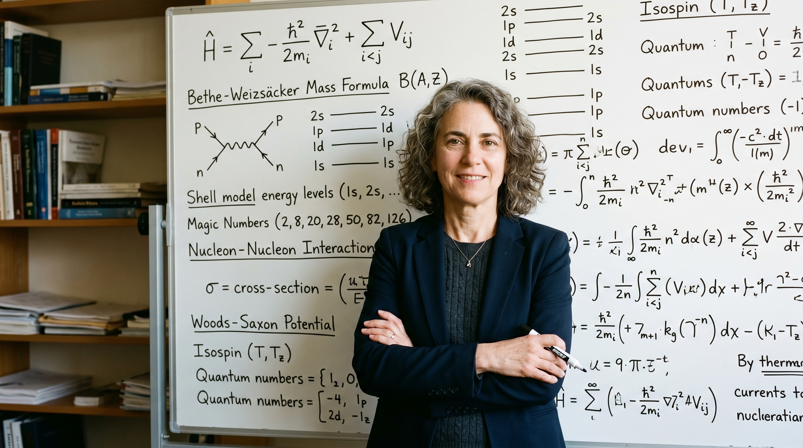
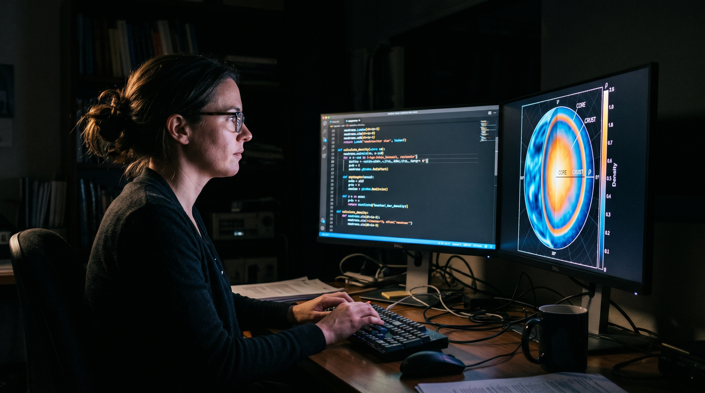
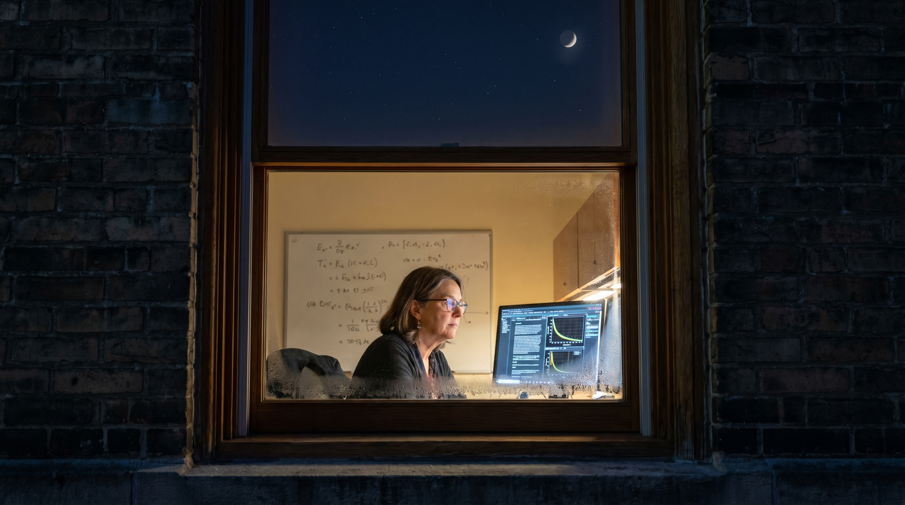
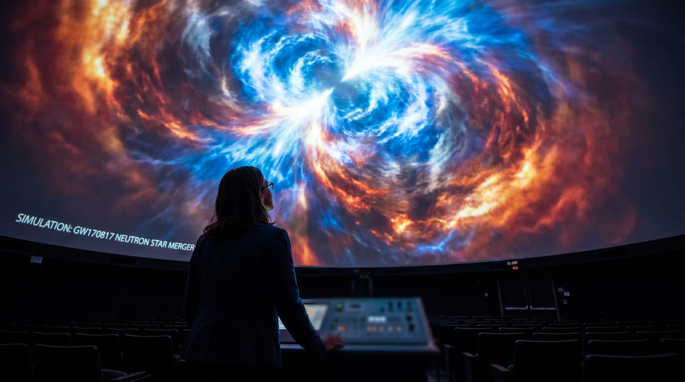

Project Context
§ 01The Challenge / Hypothesis
Neutron stars are the collapsed cores of massive stars — objects so dense that a teaspoon of their material would weigh a billion tons. Inside them, matter behaves in ways that are impossible to recreate in any laboratory on Earth. The question: what are the physical laws governing matter at the most extreme conditions in the known universe?
The Solution / Innovation
Veronica Dexheimer develops theoretical and computational models of neutron star interiors, working at the intersection of nuclear physics and astrophysics. Her work contributes to interpreting the gravitational wave events detected by LIGO — when two neutron stars merge, the gravitational signal carries information about the internal structure of the stars. A physicist in Kent, Ohio is helping decode signals from collisions that happened billions of light-years away. The visual challenge is that her subject is invisible, theoretical, and vast — and her workspace is a desktop computer.
Scientific Workflow
§ 02Theoretical Modeling
Developing equations of state for dense nuclear matter — mathematical frameworks that describe how matter behaves under extreme pressure and density.
Computational Simulation
Running simulations of neutron star interiors and merger events on high-performance computing systems. The output is data visualizations — maps of density, pressure, and temperature inside the star.
Comparison with Observational Data
Matching theoretical predictions against gravitational wave data from LIGO and X-ray telescope observations of neutron stars. The moment theory meets reality.
Collaboration and Publication
A global field — Dexheimer collaborates with physicists worldwide to refine models.
---
Shot Concepts
§ 03Dexheimer at a dark background with a projected or printed large-format neutron star visualization or simulation output filling the environment behind her. The simulation — her work, rendered visible — becomes the setting. She stands within it. This is the portrait that makes the invisible tangible.
- Project a simulation image (density map, merger visualization) large format
- She stands in front of / within the projected image, lit separately
- Use a subtle key light so her face reads against the projection
- Her expression should be contemplative, not performative — she is thinking
- Vertical and horizontal versions; leave negative space for text
Technical Notes
Setup Diagram

AI Visualization Prompt
Dexheimer at her workstation, two monitors running — one showing simulation code, one showing a data visualization of neutron star density or gravitational wave output. Face partially lit by the screens. This is the honest image of theoretical physics: a person and two screens, trying to understand the most extreme place in the universe.
- Let the monitors be the primary light source
- Position camera to capture both screens and her face in the same frame
- Don't clean the desk — the natural organized chaos of a working theorist is the image
- Profile or slight 3/4 — not looking at camera
- Shoot from slightly above to show both screens clearly
Technical Notes
Setup Diagram
AI Visualization Prompt
Dexheimer at a whiteboard or chalkboard covered in equations — the physical notation of her theoretical work. She stands beside or in front of it, looking at camera. This is the classic physics portrait elevated: the equations are genuine, the work is real, and the person in front of them is the one who derived them.
- The equations must be real, not decorative — Dexheimer's actual notation
- Warm key light on her face, cooler ambient on the board
- Her hand touching or pointing to a specific part of the derivation is an option
- Horizontal for the widest equation coverage; vertical for editorial profile
Technical Notes
Setup Diagram

AI Visualization Prompt
A close-up of a gravitational wave signal readout — the LIGO data that her theoretical models help interpret. Printed or on screen. The visual translation of a neutron star collision: a waveform pattern that looks like a sound, but is the distortion of spacetime itself.
- Print a publicly available LIGO gravitational wave signal (GW170817 is the famous neutron star merger — publicly released data)
- Warm directional light over the printed trace
- A hand or pen in frame pointing to the signal peak
- This image pairs as a section-break or conceptual companion to the portrait
Technical Notes
Setup Diagram

AI Visualization Prompt
The conceptual problem with the original prompts: A physicist at a chalkboard is the physics portrait cliché. The actual story is about scale — a person in Kent, Ohio holding in her mind the most extreme conditions in the known universe, conditions she will never see, touch, or measure directly. The images should carry that impossible distance.
The idea: A night exterior. Dexheimer stands at her office window — but the camera is outside, looking in through the glass. She is visible inside, lit by her monitor. Above her head, through the glass and through the window frame, the actual night sky is visible. She is studying what is directly above her, and she cannot see it for the ceiling. The neutron stars she models are overhead right now. The glass is the only thing between her work and its subject.
Technical Notes
Setup Diagram

AI Visualization Prompt
The idea: Dexheimer stands with her back to camera, looking up at a ceiling or wall where her neutron star merger simulation is projected enormous — filling her entire field of vision. She is small. The explosion she is studying is not. We see only the back of her head and her slightly upturned posture, the way you stand when you look at something you cannot contain. The scale differential is the entire argument: this is what it looks like to spend a career trying to understand something larger than any frame.
Technical Notes
Setup Diagram
